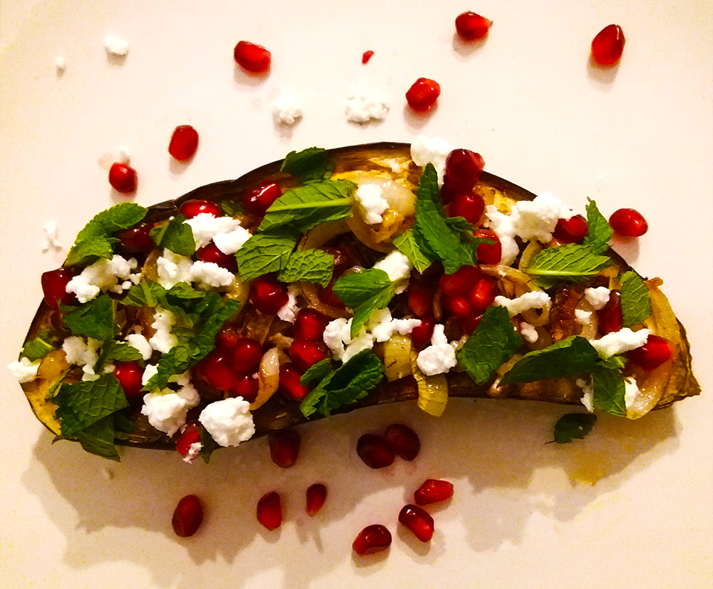

roze ontbijtbowl

albanese byrek met spinazie

macedonische shopska salade

zomerse salade

citroen muntthee

marokkaanse tajine

vietnamese pannenkoeken (banh xeo)

geroosterde aubergine

Bereidingsduur: 45 minuten
Aantal personen: 4
Ingrediënten:
2 aubergines
100 gram granaatappelpitjes
1 ui
100 gram (vegan) fetakaas
4 takjes munt
1 theelepel tijm
1 theelepel paprikapoeder
0,5 theelepel komijn
naar smaak zout en peper
olijfolie
2 aubergines
100 gram granaatappelpitjes
1 ui
100 gram (vegan) fetakaas
4 takjes munt
1 theelepel tijm
1 theelepel paprikapoeder
0,5 theelepel komijn
naar smaak zout en peper
olijfolie
Instructies:
1. Verwarm de oven voor op 200 graden. Snijd de aubergines in een ruitjespatroon in en besprenkel met olijfolie, tijm, peper, zout, komijn en paprikapoeder. Verwarm dit 40 minuten in de oven.
2. Snijd de ui in halve ringen en bak deze krokant. Snijd de munt fijn.
3. Verdeel de uien, granaatappelpitjes en munt over de aubergines en verkruimel de feta eroverheen.
1. Verwarm de oven voor op 200 graden. Snijd de aubergines in een ruitjespatroon in en besprenkel met olijfolie, tijm, peper, zout, komijn en paprikapoeder. Verwarm dit 40 minuten in de oven.
2. Snijd de ui in halve ringen en bak deze krokant. Snijd de munt fijn.
3. Verdeel de uien, granaatappelpitjes en munt over de aubergines en verkruimel de feta eroverheen.